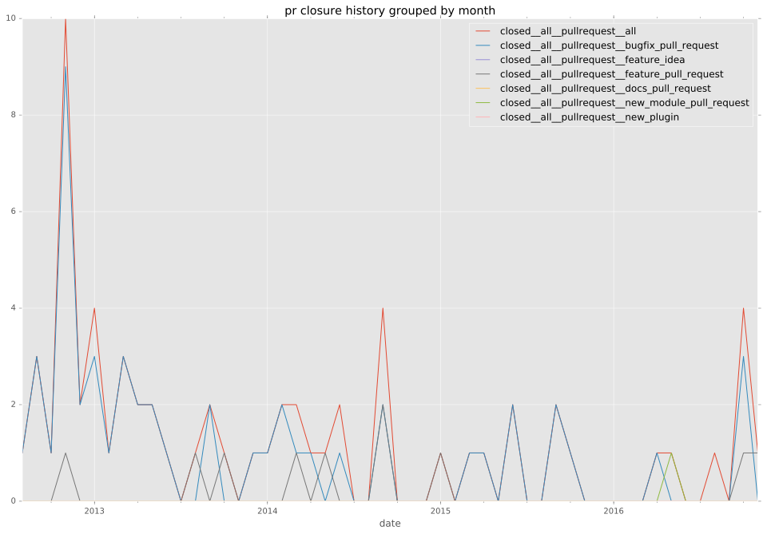
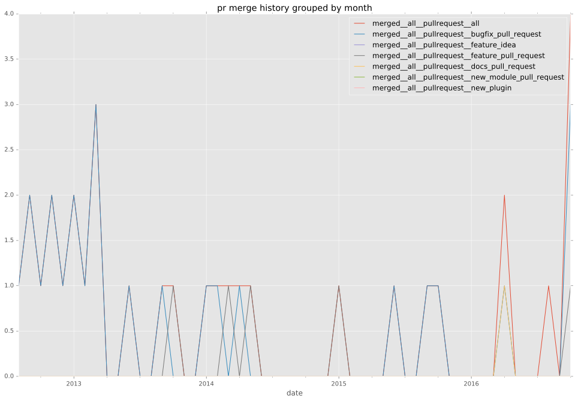
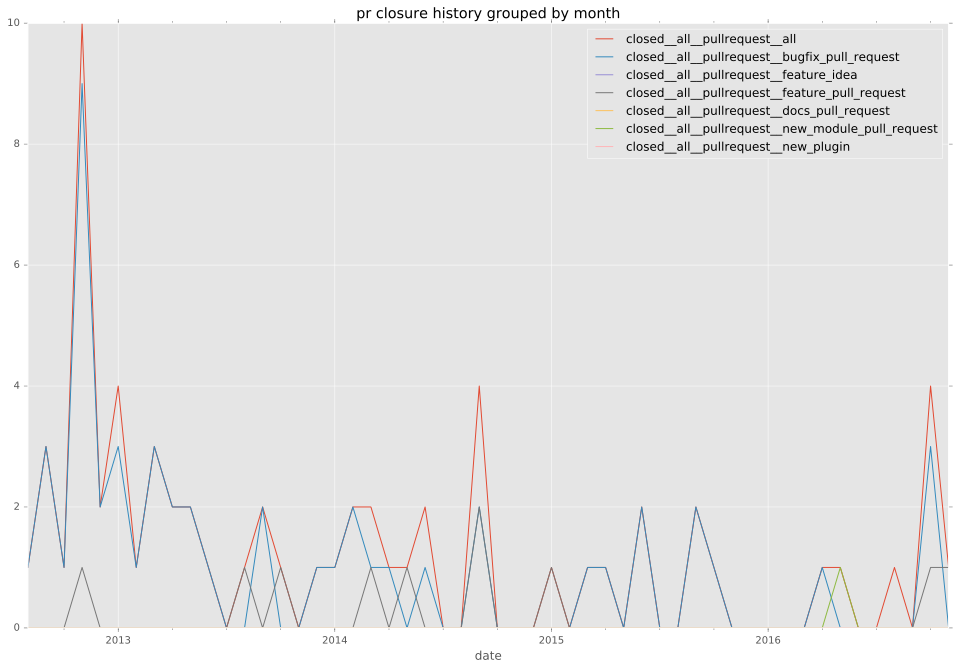
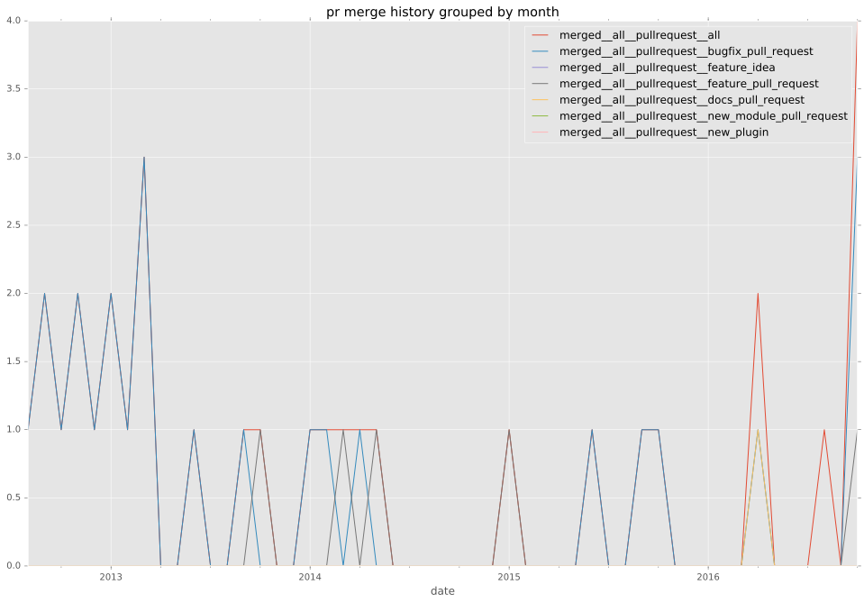
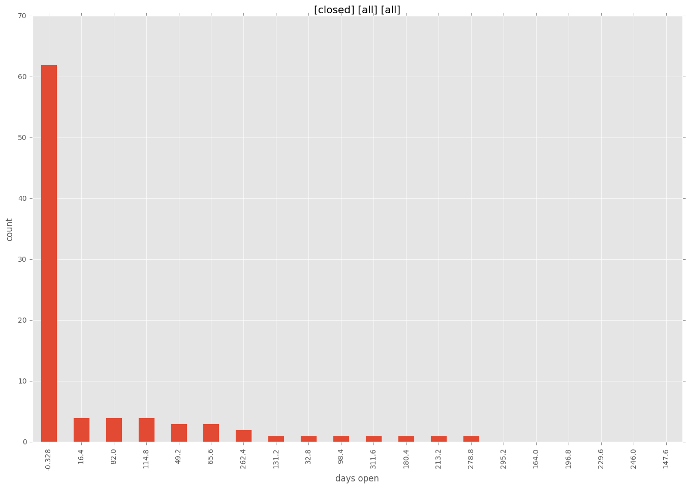

authors
- dsummersl
maintainers
- dsummersl
contributors
- njharman : 31 commits
- bbaumer : 13 commits
- matburt : 10 commits
- dsummersl : 10 commits
- sfromm : 8 commits
- mavimo : 8 commits
- cchurch : 8 commits
- skyl : 7 commits
- mscherer : 7 commits
- magnetik : 6 commits
- jimi-c : 4 commits
- abadger : 4 commits
- quinot : 2 commits
- jctanner : 2 commits
- tdbabas : 1 commits
- sivel : 1 commits
- mullnerz : 1 commits
- jpmens : 1 commits
- gundalow : 1 commits
- gawel : 1 commits
- drfickle : 1 commits
- dhozac : 1 commits
- Petrox : 1 commits
total issue counts
unknown: 1
feature pull request: 9
docs report: 1
pullrequest: 64
docs pull request: 1
bugfix pull request: 51
feature idea: 4
issue: 34
bug report: 31
issue history

pullrequest history
 



days open by issue type
bugfix pull request
count: 76
std: 58.746095055
min: 0
max: 277
median: 0.0
mean: 20.6710526316
all
count: 121
std: 68.4387522528
min: 0
max: 328
median: 1.0
mean: 33.2644628099
pullrequest
count: 0
std: nan
min: nan
max: nan
median: nan
mean: nan
docs pull request
count: 2
std: 0.0
min: 141
max: 141
median: 141.0
mean: 141.0
docs report
count: 0
std: nan
min: nan
max: nan
median: nan
mean: nan
feature pull request
count: 14
std: 77.6124494375
min: 0
max: 284
median: 8.0
mean: 45.0
feature idea
count: 0
std: nan
min: nan
max: nan
median: nan
mean: nan
issue
count: 0
std: nan
min: nan
max: nan
median: nan
mean: nan
bug report
count: 28
std: 80.1422264167
min: 0
max: 328
median: 16.5
mean: 55.0357142857
closures grouped by total days open
